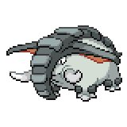
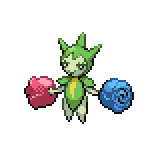
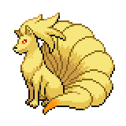
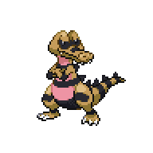
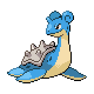
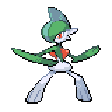

Amethyst Grotto - The Second Badge
VS Sensei Keta

Once you're ready, head on over to Amethyst Grotto and talk to Keta's spirit. The battle will then begin.
Sensei Keta
|

Donphan, Level 22 |
Ground | Bulldoze |
|---|---|---|
| Rock Tomb | ||
| Poison Sweep | ||
| Ice Shard | ||
|

Roselia, Level 23 - Occa Berry |
Grass | Magical Leaf |
| Venoshock | ||
| Poison | Hidden Power (Water) | |
| Leech Seed | ||
|

Ninetales, Level 23 - Charcoal |
Fire | Flame Burst |
| Extrasensory | ||
| Feint Attack | ||
| Will-O-Wisp | ||
|

Krokorok, Level 23 - Sitrus Berry |
Ground | Bulldoze |
| Bite | ||
| Dark | Poison Sweep | |
| Hone Claws | ||
|

Lapras, Level 24 - Sitrus Berry |
Water | Frost Breath |
| Freeze Dry | ||
| Ice | Water Pulse | |
| Confuse Ray | ||
|

Gallade, Level 25 - Leftovers |
Fighting | Drain Punch |
| Psycho Cut | ||
| Psychic | Poison Sweep | |
| Rock Tomb |
This battle can surprise you, as he does not have a full Fighting-type team. The battle is fought on the Blessed Field, which doesn't necessarily give him the full advantage. If you have Psychic-type moves like Psybeam, those will be boosted by the field and hit his Pokemon at least neutrally with the exception of Krokorok. Another Pokemon you can consider using is Nuzleaf, or even Shiftry if you used the Leaf Stone. At level 16 it will learn Nature Power, which not only turns into Judgement in this field, but is also additionally boosted by 3x. None of his Pokemon resists Normal, so this can hit his whole team pretty hard. His Pokemon do have large amounts of coverage move, but thankfully most don't have a large Attack or Special Attack stat. Roselia is a good Pokemon to take a breather and heal up your Pokemon. Krokorok is also a good rest point as long as it doesn't start setting up Hone Claws.
His main threats are Ninetales, Lapras, and Gallade. Ninetales is really fast and can hit hard with its Sun-boosted Flame Burst and field-boosted Extrasensory, but its also very frail so if you have a strong Rock-type or Ground-type you can potentially one shot it. Lapras is the tankiest member of his team, and will always get crits with Frost Breath and stops Water-type Pokemon from stalling it with Freeze-Dry. Fighting-type Pokemon can be very good here, as long as you take take one or two hits you can get rid of it. Gallade is very fast, and can quickly sweep your team with its coverage if you're not careful. Thanks to the field, it's Ghost-type weakness is essentially nullified, so its really only weak to Flying-type and Fairy-type moves. You can try to outspeed and damage it, but it will most likely Rock Tomb then outspeed you next turn. Status effects can work here, as if you can Paralyze or Burn it, Gallade's threat level will be reduced significantly. As long as you have a full team with good type coverage overall, you should be able to beat him.
After the battle ends, the title for Chapter 3 will appear. Before you leave the area, walk forward and grab TM103 - Stacking Shot.
 This is a new move that functions similarly to Round, where the more you use it the more powerful it becomes. As you try to leave, the grotto will shake, and a statue of Keta will appear in Amethyst Grotto. Now, we can head back to Sheridan Village to continue our journey.
This is a new move that functions similarly to Round, where the more you use it the more powerful it becomes. As you try to leave, the grotto will shake, and a statue of Keta will appear in Amethyst Grotto. Now, we can head back to Sheridan Village to continue our journey.
<< Sheridan Sidequests After the Second Gym >>
×

Amethyst Grotto
×

Amethyst Cave - First Room